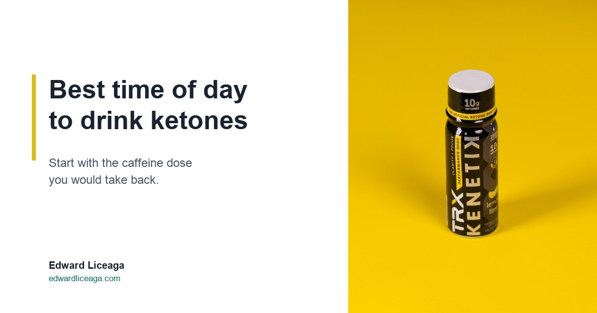

Best Time of Day to Drink Ketones: Start With the Dose You Would Take Back
The useful answer depends less on the clock than on which caffeine dose you would undo if you could.

People ask me what time they should drink a ketone drink, and they usually want a clock time. Eight in the morning. Two in the afternoon. Something they can set a reminder for.
I don't have one, and I would be suspicious of anybody who did. The best time of day to drink ketones depends on what your day asks of you, and on what you would otherwise reach for at that moment.
Disclosure up front: I sell this product through a referral link and earn a commission when someone buys through it. Read what follows with that in mind.
Why the clock is the wrong question
Caffeine and ketones do different jobs, so they get timed differently.
Caffeine blocks adenosine, the molecule that builds up across your waking hours and registers as tiredness. The block wears off on a schedule, and caffeine's half life averages around five hours, so a mid afternoon cup is still partly active at bedtime. I worked through that arithmetic in The Coffee You Drank at 3 PM Is Still Working at Midnight. Because the cost of caffeine shows up later, timing it is mostly damage control.
A ketone drink supplies fuel. Your liver makes ketones from fat when glucose runs short, and your brain uses them readily. The drink hands you that fuel directly, with no stimulant in it and no half life to run against your sleep. Timing it comes down to putting the fuel in front of the work that needs it.
That gives you a simple way to decide. Find the stretch of your day that is hardest to think through, then find the dose of caffeine you would take back if you could. For most people the two sit close together, and that is the slot.
Four windows where it tends to earn its place
The first is the start of a long focus block, once your morning coffee has done its work. Plenty of people keep their first cup and do fine with it. What they could do without is the second one at ten thirty that sets up the afternoon. If you are sitting down to three hours of spreadsheets, writing, or code, that is a reasonable moment for the can.
The second is early afternoon, which is where most people's regret dose lives. Enough people hit a wall after lunch that I wrote a whole piece on it, The 2 PM Wall. A third coffee at two feels like the fix, and it is still in your system at eleven. Swapping in something caffeine free here does the most for the rest of the day.
The third is before training, especially if you train fasted. I covered that, including where it does not help, in Ketones Before a Workout. The shot fits a gym bag and goes down in one swallow, which is why it is the format I reach for before a session.
The fourth is the late shift or the long drive, when "stop caffeine by early afternoon" stops meaning anything because your day does not end at night. That one has its own piece too, Ketones for Shift Work and Long Drives, and the same caution applies. Nothing you drink makes it safe to drive tired. If your eyes are closing, pull over.
When I would not bother
If you are rested, sharp, and about to do something easy, you do not need anything. A drink does not have to earn a slot every day to be useful on the days it does.
I also would not add it on top of the caffeine you already drink and call that a routine. A day still running on three coffees keeps all three, so replace one of them instead.
And it is not a sleep substitute. It supports clarity, focus, and cognitive endurance. That is the claim, and I am not going to stretch it. Sleep debt gets repaid with sleep.
Can or shot: the format often decides the timing
The two formats carry different labels, so here they are side by side.
The can is 12 ounces with 12 grams of ketones and 60 calories. It suits sitting down: a desk, a long afternoon, something you sip over a while.
The TRX shot is a 2 ounce bottle with 10 grams of ketones. It suits leaving the house. It rides in a gym bag or a glovebox, does not need to be cold, and is gone in a swallow.
Both are caffeine free, sugar free, made with nothing artificial, and Informed Sport certified, which means an outside lab screens batches for banned substances. What that certification does and does not cover is in Informed Sport Certified: What Third Party Testing Actually Means.
In practice the format settles a lot of it for you. A long stretch at a desk means the can. Walking out the door means the shot.
Find your own slot in a week
Spend the first three days without buying anything. Write down every caffeine dose and the time you took it, then mark the one you would undo if you could. Most people mark the same one three days running, usually the one after lunch or the one late in a long day.
For the next four days, replace that single dose and keep everything else the same, so you can tell what changed. By the end of the week you will know whether the best time of day to drink ketones, for you, is the slot you picked or somewhere else.
That answer comes from your own day, which makes it sturdier than any clock time I could hand you.
Caffeine free, sugar free. My link if you want to try it: https://drinkkenetik.com/EDDIEG
Promo code: EDDIEG
I earn a commission on purchases through this link. This article is consumer information and is not medical advice.